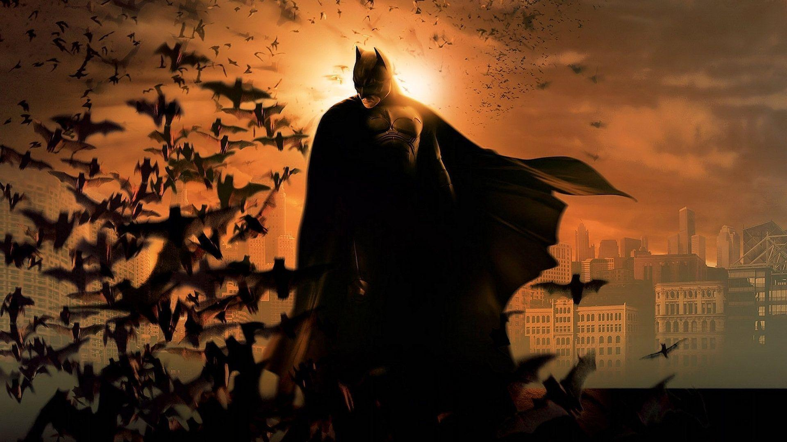
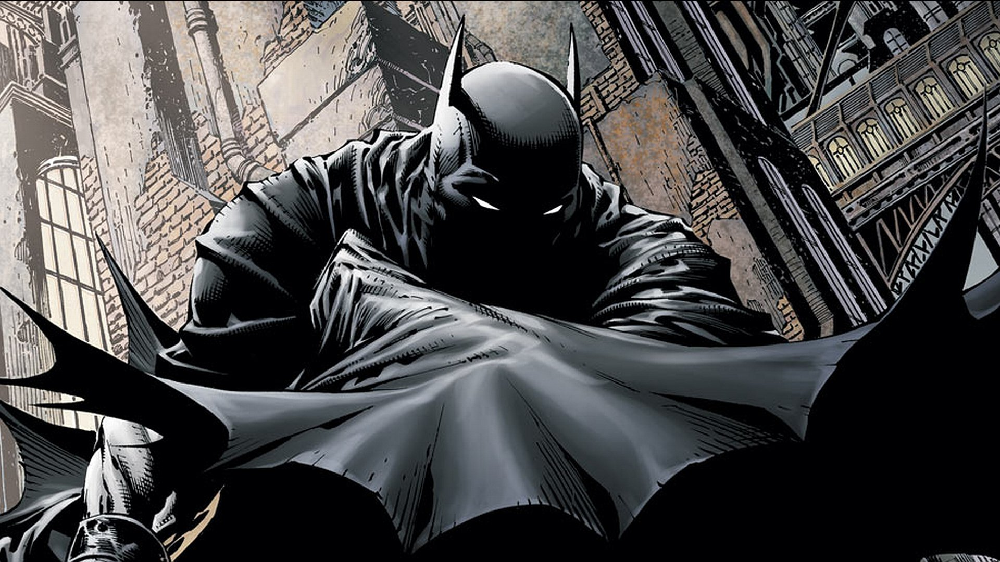
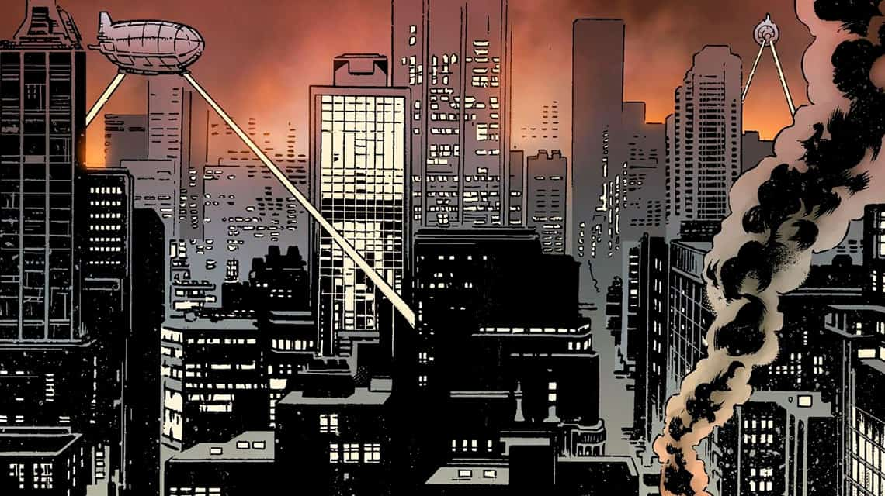
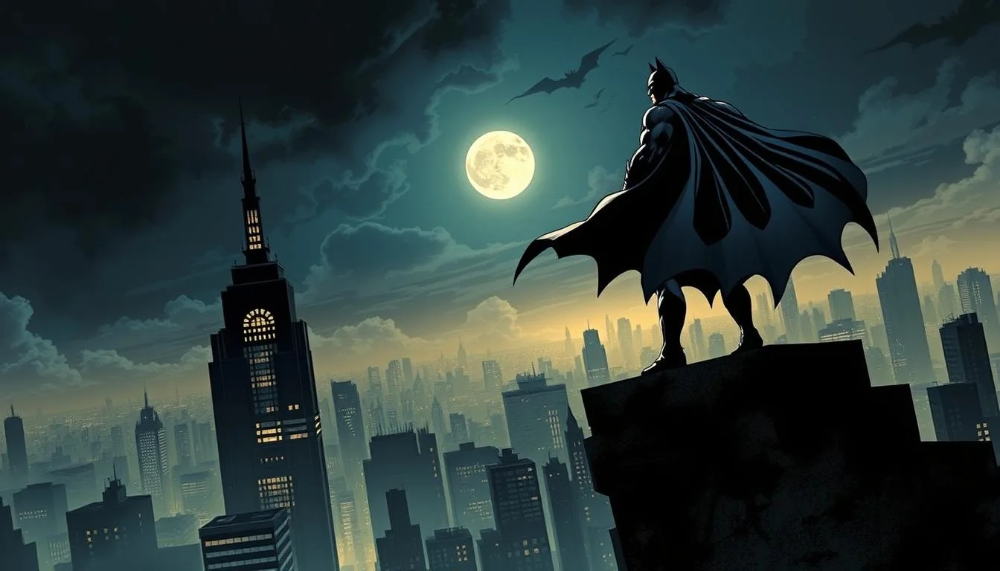

Batman Begins

Una ciudad sumida en el caos. Un niño marcado por la tragedia. Bruce Wayne emprende un viaje que lo llevará al límite de sus creencias.

En la oscuridad encuentra respuestas. Se entrena en cuerpo y mente, enfrentando sus miedos más profundos para darles forma.

Las sombras lo forjan. Aprende el sigilo, el combate y la estrategia en la Liga de las Sombras. Pero no comparte sus métodos extremos.

De regreso en Gotham, Bruce no busca venganza, sino justicia. Construye su identidad con tecnología, determinación y un símbolo: el murciélago.

Así nace el Caballero Oscuro. Más que un hombre: un ideal. Una advertencia a los criminales y una luz para los inocentes.